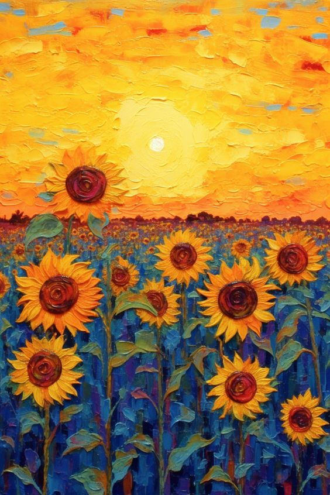

.png)
Vincent Willem van Gogh was a Dutch Post-Impressionist painter who is among the most famous and influential figures in the history of Western art. In just over a decade he created approximately 2100 artworks, including around 860 oil paintings, most of them in the last two years of his life. Van Gogh painted The Starry Night during his 12-month stay at the Saint-Paul-de-Mausole asylum near Saint-Rémy-de-Provence, France, several months after suffering a breakdown in which he severed a part of his own ear with a razor. While at the asylum, he painted during bursts of productivity that alternated with moods of despair. As an artist who preferred working from observation, van Gogh was limited to the subjects that surrounded him—his own likeness, views outside his studio window, and the surrounding countryside that he could visit with a chaperone. Although van Gogh's subjects were restricted, his style was not. He experimented with the depiction of various weather conditions and changing light, often painting the wheat fields nearby under a bright summer sun or dark storm clouds. Van Gogh was also particularly preoccupied by the challenges of painting a night landscape and wrote about it not only to his brother, Theo, but to a fellow painter, Émile Bernard, and to his sister, Willemien. In a letter addressed to the latter, he alleged that night was more colourful than day and that stars were more than simple white dots on black, instead appearing yellow, pink, or green. By the time van Gogh arrived at Saint-Rémy, he had already painted a few night scenes, including Starry Night (Rhône) (1888). In that work, stars appear in bursts of yellow against a blue-black sky and compete with both the glowing gas lamps below and their reflection in the Rhône River. At the asylum, van Gogh observed the night sky from his barred bedroom window and wrote a letter to Theo describing a magnificent view of the morning star very early one morning in the summer of 1889. Because he was not allowed to paint in his bedroom, he painted the scene from memory or possibly drawings and used his imagination for the small village that did not actually exist. Employing the expressive style he had developed during his stay in Paris in 1886-88, he applied the paint directly from the tube onto the canvas, creating thick impasto and intense hues. Ambivalent about working from his imagination, van Gogh eventually regarded the finished Starry Night as a failure, and Theo frankly indicated that the painting favoured style over substance.
Vincent Van Gogh
About Artist


Product 1
Price
Product 2
Price
Product 3
Price
Product 4
Price
Product 5
Price
Product 6
Price